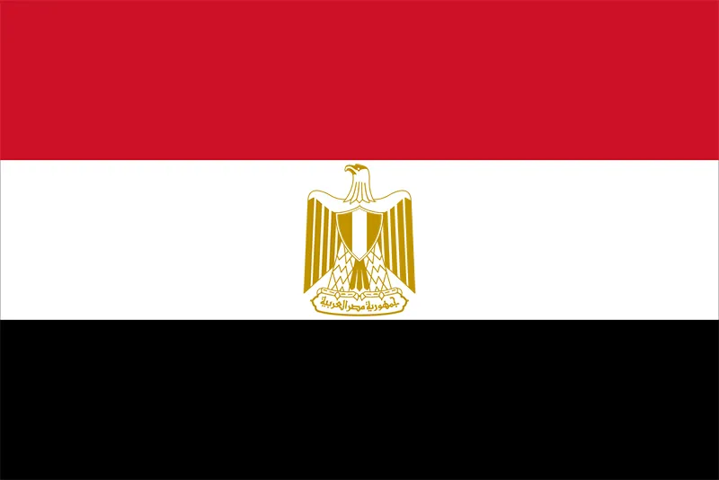
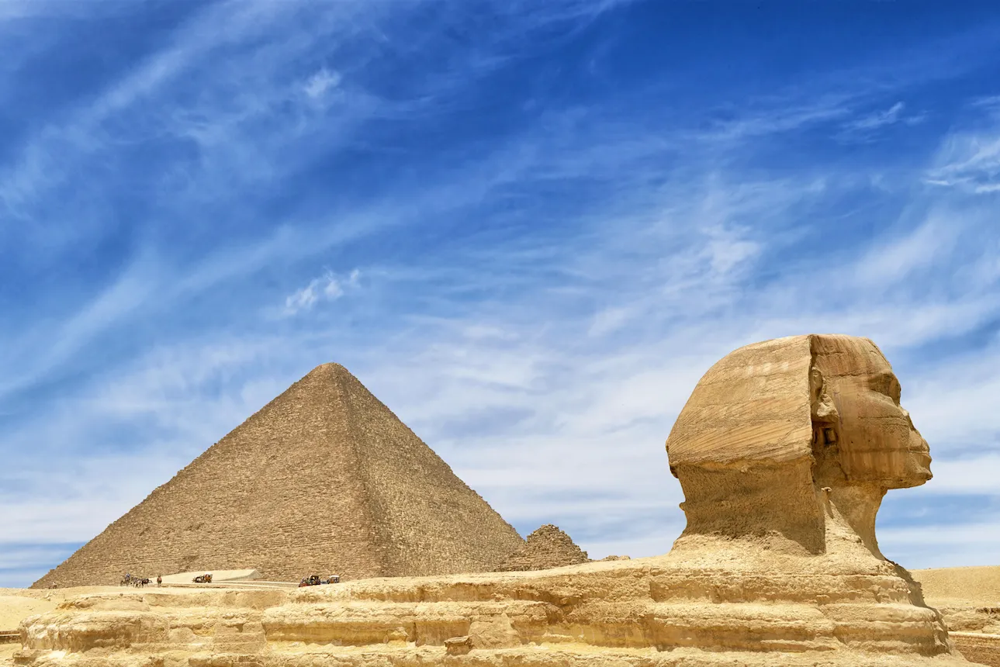
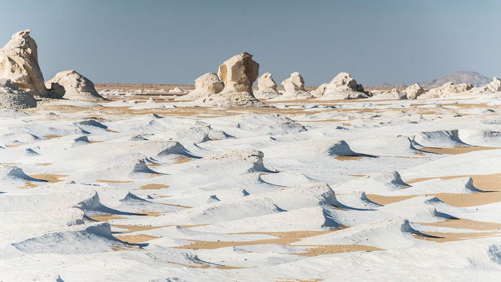
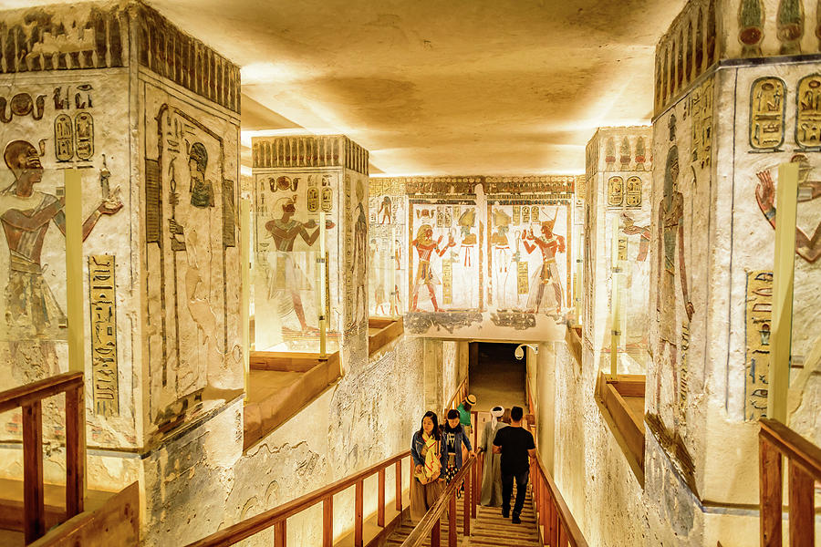

Egipt este o țară arabă din nordul Africii și din Orientul Mijlociu, limitată la nord de Marea Mediterană, la est de Fâșia Gaza, de Israel, de Golful Aqaba și de Marea Roșie, la sud de Sudan iar la vest de Libia. Situat chiar la intersecția dintre Africa și Asia, astăzi Egiptul reprezintă un important punct de transport între continente, prin Canalul Suez.
Sursa vieții Egiptului a fost și este râul Nil prin valea sa fertilă - “pământul negru” - cum îl numeau grecii antici.
În prezent resursele naturale ale țării sunt cărbunele, petrolul, gazele naturale, aurul dar și citricele, economia țării bazandu-se pe turism și agricultura. Principalele stațiuni turistice sunt Sharm El Sheikh și Hurghada, ambele la Marea Roșie.
DATE GENERALE

Denumirea oficiala: Republica Arabă a Egiptului
Fusul orar: UTC+2
Capitala: Cairo
Suprafata: 1.010.407 km2
Moneda: lira egipteană
Limba oficiala: arabă
Prefix telefonic international: +20
ATRACTII TURISTICE

Piramidele din Giza complex de monumente antice, se numără printre cele mai cunoscute piramide din antichitate, ele fiind considerate una dintre cele șapte minuni ale lumii antice. Piramidele sunt situate la vest de Valea Nilului și cca. 8 km sud-vest de orașul Giza și 18 km de Cairo, capitala modernă a Egiptului. Se crede că clădirile au fost create în Împărăția veche a Egiptului Antic, în timpul domniei dinastiei IV-VI. Marea Piramidă din Giza este singurul monument al celor șapte minuni ale lumii antice. Este, de asemenea, o comoară națională a Egiptului.Majoritatea teoriilor de construcție se bazează pe ideea că piramidele au fost construite prin mișcarea unor pietre imense din carieră, prin glisare și ridicare pe loc. Centrul de dezacorduri se referă la metoda prin care pietrele au fost transportate și plasate și cât de posibil a fost metoda.
În construirea piramidelor, arhitecții ar fi putut să-și dezvolte tehnicile în timp. Ei ar selecta un sit pe o suprafață relativ plată de rocă de bază - nu de nisip - care a oferit o bază stabilă. După ce au urmărit cu atenție situl și au stabilit primul nivel de pietre, au construit piramidele în nivele orizontale, unul pe celălalt. Doar câteva blocuri exterioare rămân în loc în partea de jos a Marii Piramide.

Deșertul Alb din Egipt este o zonă mică în estul deșertului Sahara, cu o suprafață de aproximativ 300 km2. (10 km x 30 km), întins pe drumul dintre oazele Bahariya și Farafra. Distanța de la Cairo la deșertul alb este de 500 km; Deșertul Alb este cunoscut pentru formațiunile sale carstice bizare. Cu multe milioane de ani în urmă, aici exista un fund al oceanului, iar roca albă este rămășițele microorganismelor marine. De-a lungul secolelor, vântul și nisipul au transformat fostul fund al mării într-o aparență a suprafeței altei planete. Deșertul are o culoare albă cremoasă - o rocă masivă de cretă formată ca urmare a furtunilor periodice de nisip din zonă.

Valea Regilor este o vale din Egipt unde de-a lungul unei perioade de aproape 500 de ani au fost excavate morminte pentru faraonii și nobilii din Noul Regat Egiptean. Valea se află situată pe malul de vest al Nilului, în dreptul orașului Luxor de azi.
Zona a fost cercetată arheologic începând cu sfârșitul secolului al XVIII-lea, mormintele sale fiind studiate și în prezent. Valea a devenit faimoasă după 1922, ca urmare a descoperirii mormântului lui Tutankhamon, cu al său „blestem”.